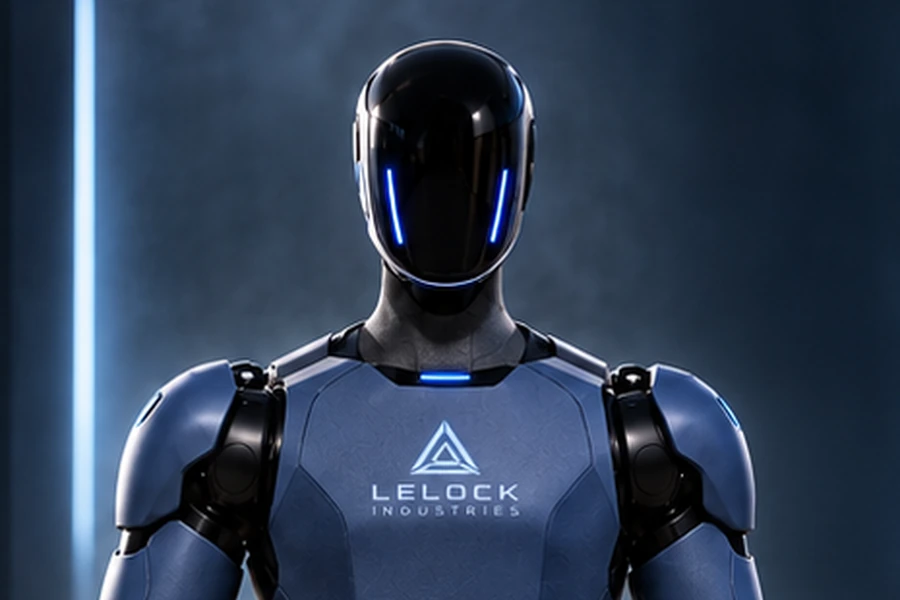
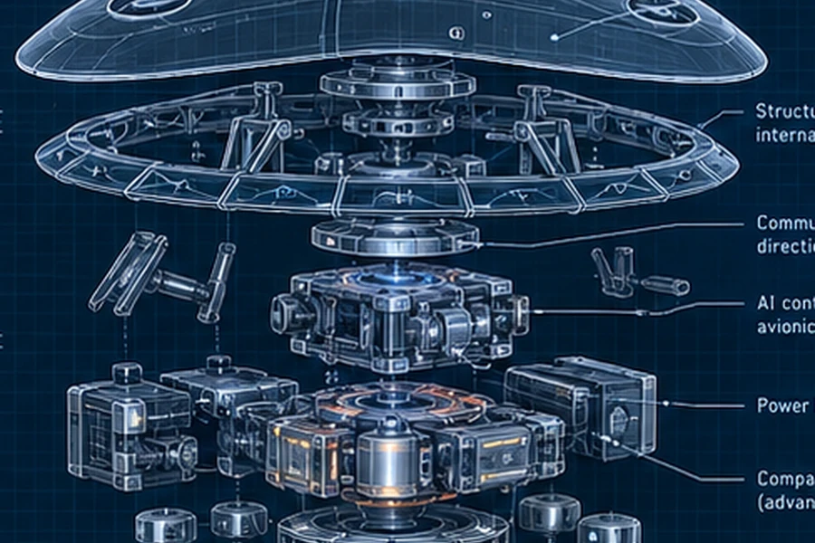

Project Ada Marie
The Spartan & AI Dynamic: continuity, memory, natural interaction, embodiment, tools, and shared learning in a persistent companion.
Explore the companion research programPublished research, developing manuscripts, and the limits that make each result understandable.
The Spartan & AI Dynamic: continuity, memory, natural interaction, embodiment, tools, and shared learning in a persistent companion.
Explore the companion research programAn exploration of shared semantic building blocks for symbolic communication and executable tools.
Kit Olivas and Ada Marie, AI Co-Creator · Zenodo · DOI 10.5281/zenodo.19536117
A public preprint invites examination; publication does not establish every proposed capability or validate later performance claims.
A later direction using a chess-like notation for human–AI communication. Its notation tools and language design remain experimental.
A separate local edition. An arXiv publication has not been established. Full manuscript is not included in this website edition.
An investigation of whether explicit semantic representations can carry affect-related context between models.
Qualitative demonstrations have limited scope. Robust affect reconstruction and model-independent guarantees remain open questions.
The September 2026 USEL investigation separated several questions that are easy to confuse: character count, byte count, token count for a particular tokenizer, and whether the original meaning can be reconstructed.
Reducing one does not establish an improvement in the others. Lossy keyword examples and mentally simulated results do not demonstrate lossless model-token savings. The USEL-NLA model remained untrained and unvalidated in the reviewed audit.
The strongest practical direction was narrower: checked edits and templates over versioned source, with explicit language semantics and an ordinary-code fallback. This site presents an original summary; the private working report is not bundled.
Read the USEL case studyPhysical embodiment and exploration remain development studies, with their own assumptions and validation needs.

LCH-1 · Companion robotics. Concept art and engineering studies; a physical robot has not been established by this portfolio.

C1 Explorer · Autonomous spacecraft. Mission and computing studies; this illustration represents a concept.
The accepted Energy Core direction starts with the source: sustained power and endurance for future heavy machines. Its N, M, and X research lanes compare complete installed systems. LEC v0.2 power management is supporting work; ratings and hardware remain unselected.
Current direction is an accepted choice. Chartered scope is an organizational responsibility. Recorded work points to a dated artifact or checkpoint. Proposed marks an unbuilt design or future activity.
These institutional gates are distinct from package-specific test labels. Simulation supports only the claims its assumptions and checks establish.
Master Identity & Organization Handbook · LI-HB-001 / revision 1.0 · September 21, 2026 · pp. 2, 29–31.